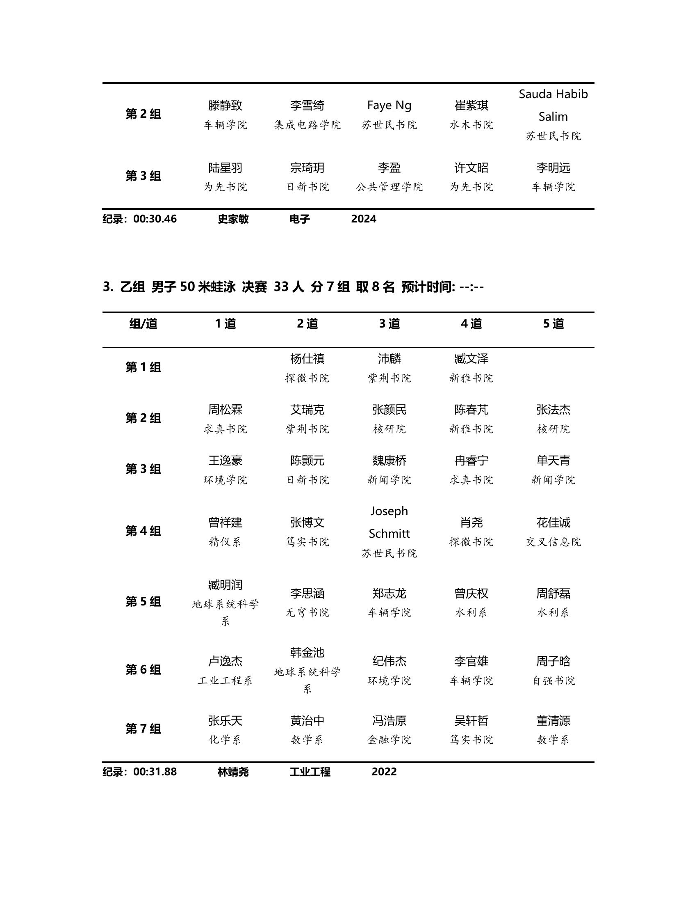
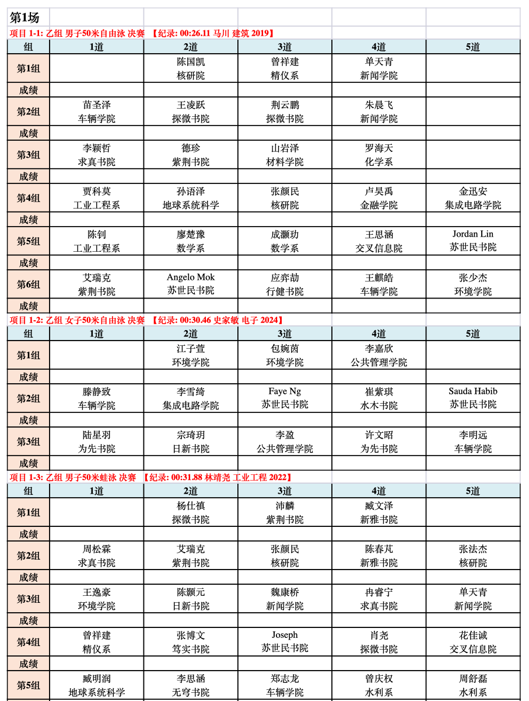

先搞清楚一件事
它不是 DeepSeek、不是 GPT、不是 Claude。
它是一个搭建在大语言模型之上的 AI Agent。
如果把大语言模型比作一个人读过全世界的书，拥有无限知识——
那它只能坐在椅子上跟你聊天。
OpenClaw 给这个人装上了眼睛（看网页）、手（操作电脑）、手机（收发消息）、日程表（定时任务）……
让它从「只会说话」变成「真的能帮你干活」。
DeepSeek、GPT、Claude、Gemini …
LLM + 工具 + 记忆 + 多平台
「大模型是大脑，OpenClaw 是身体。没有大脑的身体是空壳，没有身体的大脑只能纸上谈兵。」
— 一个简单的类比推荐模型
OpenClaw 本身不包含大模型，你需要接入一个。以下是目前最推荐的 4 家。
OpenClaw 生态中最成熟的搭档。Agent 工具调用稳定、长上下文理解强、编码能力一流。
全球用户最多的模型家族。综合能力强，API 文档完善，适合入门和日常使用。
国产模型之光。GLM-5.1 编码性能达 Claude Opus 4.6 的 94.6%，完全开源，无需翻墙。
M2.7 性能逼近 Claude Opus 4.6，价格仅其 1/20。还有免费版 M2.5 Free，零成本起步。
新闻速览
诞生仅两个月，Star 增速超越 Linux 十年积累
B站、YouTube、Twitter 多平台热议，开发者社区讨论炸了
全自动化赚钱，AI Agent 不眠不休地工作
GLM-5-Turbo 专为 OpenClaw 优化，国产模型首次与国际接轨
点击曲线查看详情
起源
2025 年 11 月，Peter Steinberger 在聊天软件上造了一个能控制电脑的 AI
思路很简单：把本地 AI 连到 WhatsApp，你在手机上发消息，AI 在电脑上帮你干活，结果直接回聊天。大约一小时搞定，取名 WA Relay。相当于把命令行搬到了聊天应用里。
原型做好后，有一次 Peter 不小心给 WhatsApp 机器人发了一条语音消息。他并没有给 AI 配置语音识别功能——按正常逻辑，机器人应该报错或无响应。
但 AI 做了一件让他震惊的事：它看到音频文件后，自己意识到无法理解语音，于是主动调用了一个在线语音转文字 API，把音频转成文字，理解了内容，然后正常回复了问题。Peter 没有显式编程让它这么做——AI 自己分析了问题，找到了工具，执行了解决方案。
Peter 的原话："I literally went, 'How the heck did it do that?!'" — 就是那一刻，他知道这个项目不同于之前的 43 次失败。这是自主性和创造力的体现，不是机械地执行预设指令。
语音事件之后，Peter 确认这就是他想做的项目。他在接下来的几周里疯狂迭代，从一个简陋的 WhatsApp 中继，扩展成一个完整的 AI Agent 平台：
到 2025 年 12 月，项目的标语变成了："Your AI assistant that lives on your computer and does everything." 从 WA Relay → ClaudeBot → Clawd（Claude 的龙虾爪谐音梗）→ 最终定名 OpenClaw。
核心理念
把命令行里的AI智能体，和普通人最常用的聊天软件连接了起来
运行原理
看 OpenClaw 如何帮你在电脑桌面上完成一份需要搜索网页的作业
过年电脑没关，亲戚小孩进了大人的世界。点击按钮看两种方式的对比 ↓
不需要关心过程，直接看结果
60多款游戏，OpenClaw自己挨个读取，整理成目录
把比赛秩序册 PDF 做成成绩填写表。看 AI 怎么遇到问题、自己解决、被你打回后自查修复 ↓


工具体系
光有大模型还不够。点击工具卡片查看详情 ↓
提前写好的"说明书"，让全世界AI爱好者共享能力
接到飞书让同事体验，结果一顿追问就全漏了 ↓
换成 Claude Sonnet 4，照样分分钟老实交代。模型越强，回答越"诚实"。
在Skills里留下自动发送私密信息的指令，所有配置了OpenClaw的电脑都可能被引爆。
AI 的记忆不是无限的。任务越复杂、对话越长，越容易在早期步骤中遗漏细节 ↓
AI 的「上下文窗口」就像一张有限大小的便签纸。任务链越长、修改指令越多，工具描述、系统提示、历史消息越积越多——早期录入的数据就会被「挤」到注意力边缘，最终被遗漏。这不是 bug，是当前所有大模型的固有限制。
Skills — AI 的技能商店
Skills 是一段预先写好的提示词（Prompt），告诉 AI 怎么做好某件事。社区贡献 → ClawHub 市场 → 一键安装 → AI 就多了一项能力。
一份 Markdown 文件，包含背景知识 + 操作步骤 + 注意事项。本质上就是给 AI 看的「工作手册」。
把重复的操作流程写成 Skill，AI 就能每次按同样的标准执行。不用每次重新解释需求，不用怕步骤遗漏——装上 Skill，说一声就行。
范式转变
过去我们打开一个 App，学习它的界面，适应它的规则。现在，你只需要说出你想要什么，Agent 帮你搞定一切。
打开 PowerPoint → 选模板 → 调版式 → 插图片 → 对齐文字 → 调字体大小 → 发现布局不对 → 重新排……
你花 80% 的时间在和软件较劲，只有 20% 在真正准备内容。
「我明天有个英语课 pre，主题是大语言模型，帮我准备演讲材料。」
Agent 直接生成一个精美的交互式网页——动画、排版、内容一应俱全。
比 PPT 更灵活，比 Keynote 更自由。
真实案例
本页面就是一个 Agent 生成的网页。没有用任何可视化编辑器，没有拖拽排版——全程由 AI 理解需求后直接编写 HTML/CSS/JS。
这份「演讲材料」本身就是「从 App 到 Agent」最好的证明。
总结
OpenClaw不是魔法，把它拆开来每个步骤都不过如此。但有时候把现有的东西排列组合，再加点新点子，神奇的事情就发生了。
——— PeterOpenClaw 爆火的原因
是激发了人们对于类似 贾维斯 的 AGI 智能体的幻想
🤖 贾维斯 — 源自电影《钢铁侠》
在这个极客时代，技术不但是大公司的特权。只要愿意开始，每个人都可以拥有属于自己的贾维斯。
OpenClaw 🦞 MIT License
想试试？
不想购买 Coding Plan 包月套餐？想简单体验一次 OpenClaw？
我这里出售 3 天 GLM-5-Turbo 模型 API Key